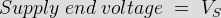

ABCD Parameters, When Receiving End is Short Circuited
A major section of power system engineering deals in the transmission of electrical power from one particular place (eg. generating station) to another like substations or distribution units with maximum efficiency. So its of substantial importance for power system engineers to be thorough with its mathematical modeling. Thus the entire transmission system can be simplified to a two port network for the sake of easier calculations.
The circuit of a 2 port network is shown in the diagram below. As the name suggests, a 2 port network consists of an input port PQ and an output port RS. Each port has 2 terminals to connect itself to the external circuit. Thus it is essentially a 2 port or a 4 terminal circuit, having

Given to the input port P Q.
Given to the output port R S.
As shown in the diagram below.
Now the ABCD parameters or the transmission line parameters provide the link between the supply and receiving end voltages and currents, considering the circuit elements to be linear in nature.
Thus the relation between the sending and receiving end specifications are given using ABCD parameters by the equations below.
Now in order to determine the ABCD parameters of transmission line let us impose the required circuit conditions in different cases.
ABCD Parameters, When Receiving End is Open Circuited
The receiving end is open circuited meaning receiving end electric current IR = 0.
Applying this condition to equation (1) we get,
Thus its implies that on applying open circuit condition to ABCD parameters, we get parameter A as the ratio of sending end voltage to the open circuit receiving end voltage. Since dimension wise A is a ratio of voltage to voltage, A is a dimension less parameter.
Applying the same open circuit condition i.e IR = 0 to equation (2)

Thus its implies that on applying open circuit condition to ABCD parameters of transmission line, we get parameter C as the ratio of sending end electric current to the open circuit receiving end voltage. Since dimension wise C is a ratio of electric current to voltage, its unit is mho.
Thus C is the open circuit conductance and is given by
C = IS ⁄ VR mho.
ABCD Parameters, When Receiving End is Short Circuited
Receiving end is short circuited meaning receiving end voltage VR = 0
Applying this condition to equation (1) we get,
Thus its implies that on applying short circuit condition to ABCD parameters, we get parameter B as the ratio of sending end voltage to the short circuit receiving end current. Since dimension wise B is a ratio of voltage to current, its unit is Ω. Thus B is the short circuit resistance and is given by
B = VS ⁄ IR Ω.
Applying the same short circuit condition i.e VR = 0 to equation (2) we get
Thus its implies that on applying short circuit condition to ABCD parameters, we get parameter D as the ratio of sending end electric current to the short circuit receiving end current. Since dimension wise D is a ratio of electric current to current, it’s a dimension less parameter. ∴ the ABCD parameters of transmission line can be tabulated as:-
| Parameter | Specification | Unit |
|---|---|---|
| A = VS / VR | Voltage ratio | Unit less |
| B = VS / IR | Short circuit resistance | Ω |
| C = IS / VR | Open circuit conductance | mho |
| D = IS / IR | Current ratio | Unit less |
 by
by